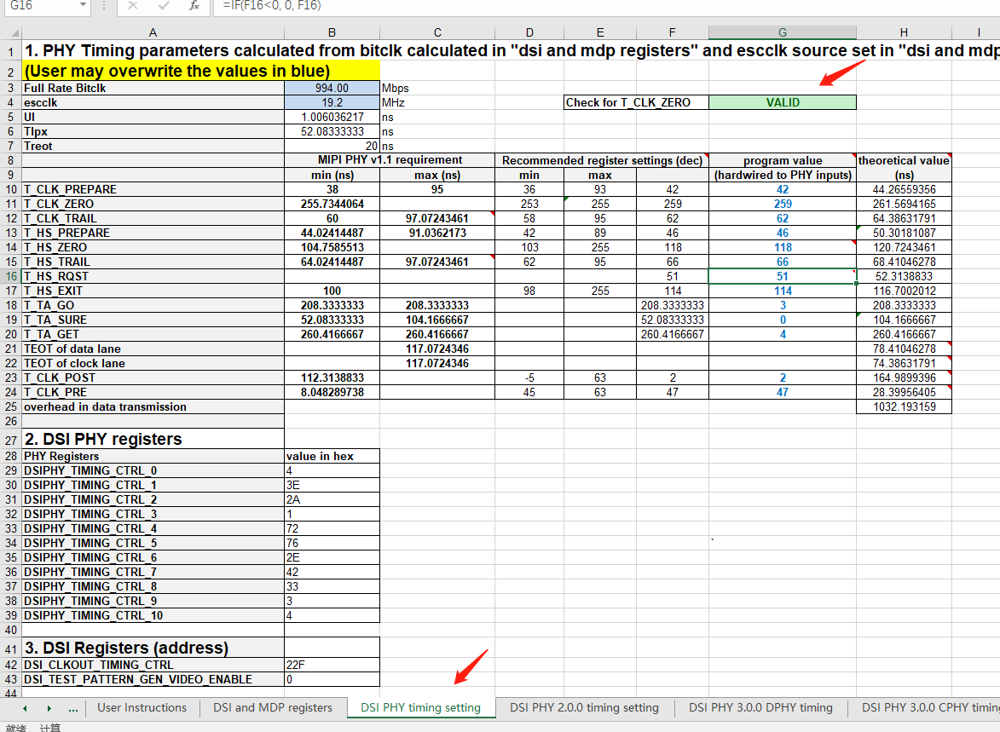
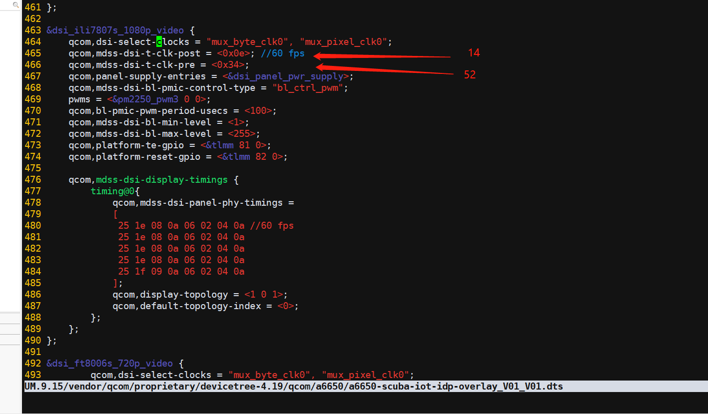

README¶
高通平台,屏参数调试
备注¶
A6650 项目1080P excel表,对应以下提交,files/鸿展1080p_ili7807s_80-nh713-1_yj_dsi_timing_parameters_user_interactive_spreadsheet.xlsm
99d381c3194c581101aaccfd42a74cf44905ac5f [Title]: 修复A6650 1080p屏幕顶部右上角闪屏及灰阶闪屏问题 [Summary]: 1.右上角闪，优化porch设置。 2.灰阶闪屏，屏蔽VCOM控制寄存器。 [Test Plan]: 1.查看1080p屏幕顶部右上角闪屏。 2.Ftest测试查看灰阶图片是否有闪屏现象。
参考文档¶
files/Quectel_SC200E系列_显示驱动_开发指导_V1.1.0_Preliminary_20220928.pdf
屏调试方法¶
xbl¶
对应文件,填入屏参数
A6650_Unpacking_Tool/BOOT.XF.4.1/boot_images/QcomPkg/Settings/Panel/Panel_ili7807s_1080p_video.xml
kernel¶
对应dts 填入参数
UM.9.15/vendor/qcom/proprietary/devicetree-4.19/qcom/a6650/a6650-scuba-iot-idp-overlay_V01_V01.dts &dsi_ili7807s_1080p_video
UM.9.15/vendor/qcom/proprietary/devicetree-4.19/qcom/a6650/dsi-panel-ili7807s-1080p-video.dtsi dsi_ili7807s_1080p_video: qcom,mdss_dsi_ili7807S_1080p_video_dpi_480
excel表格,制作lcd 时序¶
启动excel表的宏编辑功能

打开 DSI and MDP registers 页,填好屏幕参数,跟fae确认填写
打开 DSI PHY timing setting页面,查看 DSI 相关时钟频率
先按 Ctrl+J 清除旧数据,显示INVALID

再按 Ctrl+K 生成新数据,显示VALID

打开 DSI PHY 2.0.0 timing setting 页面,查看计算出的DSI 时序值，示例如下

UM.9.15/vendor/qcom/proprietary/devicetree-4.19/qcom/a6650/a6650-scuba-iot-idp-overlay_V01_V01.dts
把对应屏的&dsi_ili7807s_1080p_video qcom,mdss-dsi-t-clk-post,qcom,mdss-dsi-t-clk-pre,修改一下 excel是10进制, dts是16进制

把 dts的 qcom,mdss-dsi-display-timings,按照如下图对应起来
excel表格 红色,对应dts 红色两列
exccel表格,黄色,对应dts黄色一行
excel表格,蓝色,对应dts 蓝色四行

背光pwm,占空比¶
qcom,bl-pmic-pwm-period-usecs,qcom,mdss-dsi-bl-min-level,qcom,mdss-dsi-bl-max-level
&dsi_ili7807s_1080p_video {
83 qcom,dsi-select-clocks = "mux_byte_clk0", "mux_pixel_clk0";
84 qcom,mdss-dsi-t-clk-post = <0x0e>; //60 fps
85 qcom,mdss-dsi-t-clk-pre = <0x34>;
86 qcom,panel-supply-entries = <&dsi_panel_pwr_supply>;
87 qcom,mdss-dsi-bl-pmic-control-type = "bl_ctrl_pwm";
88 pwms = <&pm2250_pwm3 0 0>;
89 qcom,bl-pmic-pwm-period-usecs = <100>;
90 qcom,mdss-dsi-bl-min-level = <1>;
91 qcom,mdss-dsi-bl-max-level = <255>;
92 qcom,platform-te-gpio = <&tlmm 81 0>;
93 qcom,platform-reset-gpio = <&tlmm 82 0>;
94 qcom,platform-reset-gpio-always-on;